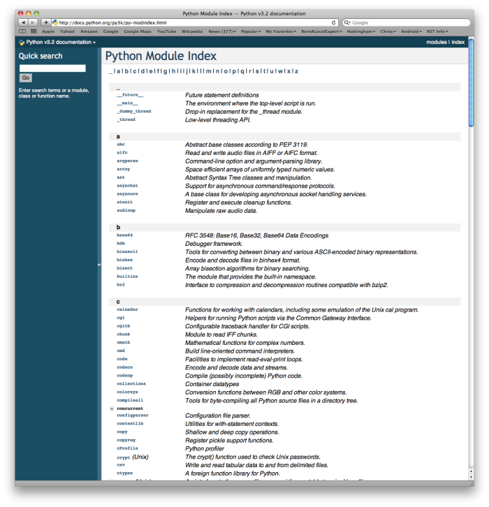

A module is a file containing Python definitions and statements intended for use in other Python programs. There are many Python modules that come with Python as part of the standard library. We have already used one of these quite extensively, the turtle module. Recall that once we import the module, we can use things that are defined inside.
(chmod_01)
Here we are using Screen and Turtle, both of which are defined inside the turtle module.
But what if no one had told us about turtle? How would we know that it exists. How would we know what it can do for us? The answer is to ask for help and the best place to get help about the Python programming environment is to consult with the Python Documentation.
The Python Documentation site for Python version 3 (the home page is shown below) is an extremely useful reference for all aspects of Python. The site contains a listing of all the standard modules that are available with Python (see Global Module Index). You will also see that there is a Language Reference and a Tutorial, as well as installation instructions, how-tos, and frequently asked questions. We encourage you to become familiar with this site and to use it often.

If you have not done so already, take a look at the Global Module Index. Here you will see an alphabetical listing of all the modules that are available as part of the standard library. Find the turtle module.

You can see that all the turtle functionality that we have talked about is there. However, there is so much more. Take some time to read through and familiarize yourself with some of the other things that turtles can do.
Note: Python modules and limitations with activecode
Throughout the chapters of this book, activecode windows allow you to practice the Python that you are learning. We mentioned in the first chapter that programming is normally done using some type of development environment and that the activecode used here was strictly to help us learn. It is not the way we write production programs.
To that end, it is necessary to mention that many of the modules available in standard Python will not work in the activecode environment. In fact, only turtle, math, and random have been ported at this point. If you wish to explore any additional modules, you will need to also explore using a more robust development environment.
Check your understanding
4.1.1: In Python a module is:
4.1.2: To find out information on the standard modules available with Python you should:
4.1.3: True / False: All standard Python modules will work in activecode.
Before we move on to exploring other modules, we should say a bit more about what modules are and how we typically use them. One of the most important things to realize about modules is the fact that they are data objects, just like any other data in Python. Module objects simply contain other Python elements.
The first thing we need to do when we wish to use a module is perform an import. In the example above, the statement import turtle creates a new name, turtle and makes it refer to a module object. This looks very much like the reference diagrams we saw earlier for simple variables.

In order to use something contained in a module, we use the dot notation, providing the module name and the specific item joined together with a “dot”. For example, to use the Turtle class, we say turtle.Turtle. You should read this as: “In the module turtle, access the Python element called Turtle”.
We will now turn our attention to a few other modules that you might find useful.

The math module contains the kinds of mathematical functions you’d typically find on your calculator and some mathematical constants like pi and e. As we noted above, when we import math, we create a reference to a module object that contains these elements.

Here are some items from the math module in action. If you want more information, you can check out the Math Module Python Documentation.
(chmodule_02)
Notice another difference between this module and our use of turtle. In turtle we create objects (either Turtle or Screen) and call methods on those objects. Remember that a turtle is a data object (recall alex and tess). We need to create one in order to use it. When we say alex = turtle.Turtle(), we are calling the constructor for the Turtle class which returns a single turtle object.
Mathematical functions do not need to be constructed. They simply perform a task. They are all housed together in a module called math. Once we have imported the math module, anything defined there can be used in our program. Notice that we always use the name of the module followed by a dot followed by the specific item form the module (math.sqrt). You can think of this as lastname.firstname where the lastname is the module family and the firstname is the individual entry in the module.
If you have not done so already, take a look at the documentation for the math module.
Check your understanding
4.2.1: Which statement allows you to use the math module in your program?
We often want to use random numbers in programs. Here are a few typical uses:
Python provides a module random that helps with tasks like this. You can take a look at it in the documentation. Here are the key things we can do with it.
(chmodule_rand)
Press the run button a number of times. Note that the values change each time. These are random numbers.
The randrange function generates an integer between its lower and upper argument, using the same semantics as range — so the lower bound is included, but the upper bound is excluded. All the values have an equal probability of occurring (i.e. the results are uniformly distributed).
The random() function returns a floating point number in the range [0.0, 1.0) — the square bracket means “closed interval on the left” and the round parenthesis means “open interval on the right”. In other words, 0.0 is possible, but all returned numbers will be strictly less than 1.0. It is usual to scale the results after calling this method, to get them into a range suitable for your application.
In the case shown here, we’ve converted the result of the method call to a number in the range [0.0, 5.0). Once more, these are uniformly distributed numbers — numbers close to 0 are just as likely to occur as numbers close to 0.5, or numbers close to 1.0. If you continue to press the run button you will see random values between 0.0 and up to but not including 5.0.
(chmodule_rand2)
It is important to note that random number generators are based on a deterministic algorithm — repeatable and predictable. So they’re called pseudo-random generators — they are not genuinely random. They start with a seed value. Each time you ask for another random number, you’ll get one based on the current seed attribute, and the state of the seed (which is one of the attributes of the generator) will be updated. The good news is that each time you run your program, the seed value is likely different meaning that even though the random numbers are being created algorithmically, you will likely get random behavior each time you execute.
Lab
Check your understanding
4.4.1: Which of the following is the correct way to reference the value pi within the math module. Assume you have already imported the math module.
4.4.2: Which module would you most likely use if you were writing a function to simulate rolling dice?
4.4.3: The correct code to generate a random number between 1 and 100 (inclusive) is:
4.4.4: One reason that lotteries don’t use computers to generate random numbers is: